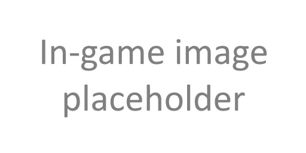

Twitch
YouTube
Discord
GitHub
Twitter
Guide
Speedrun Guide
Casual Guide
Archive
Checklist
Map
Nirnroute
Wiki/Tools
Wiki
Tools
Glitches
Tools/Resources Directory
üèÜ
⚙️
0
%
Locations
Nirnroots
Wayshrines/Heaven Stones
Nearby Gates
No TSP
Location TSP
Nirnroot TSP
Show prediscovered locations
Show distance between locations
Show formID on map
Show non-gate locations
Show Settings
Nirnroot Title
Nirnroots Found:
##
Prev
Next
Jump to
Far image

Close image